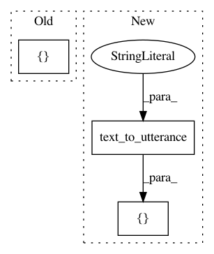

22ae798b8a492eb44ee2572843eaed4927d76d32,snips_nlu/tests/test_intent_classifier_featurizer.py,TestIntentClassifierFeaturizer,test_featurizer_should_exclude_replacement_string,#TestIntentClassifierFeaturizer#,326
Before Change
featurizer = Featurizer(
language, unknown_words_replacement_string=replacement_string,
config=FeaturizerConfig())
queries = ["hello dude"]
y = np.array([1])
// When
featurizer.fit(dataset, queries, y)
After Change
featurizer = Featurizer(
language, unknown_words_replacement_string=replacement_string,
config=FeaturizerConfig())
utterances = [text_to_utterance("hello dude")]
y = np.array([1])
// When
featurizer.fit(dataset, utterances, y)
In pattern: SUPERPATTERN
Frequency: 3
Non-data size: 3
Instances
Project Name: snipsco/snips-nlu
Commit Name: 22ae798b8a492eb44ee2572843eaed4927d76d32
Time: 2018-06-07
Author: adrien.ball@snips.net
File Name: snips_nlu/tests/test_intent_classifier_featurizer.py
Class Name: TestIntentClassifierFeaturizer
Method Name: test_featurizer_should_exclude_replacement_string
Project Name: snipsco/snips-nlu
Commit Name: 22ae798b8a492eb44ee2572843eaed4927d76d32
Time: 2018-06-07
Author: adrien.ball@snips.net
File Name: snips_nlu/tests/test_intent_classifier_featurizer.py
Class Name: TestIntentClassifierFeaturizer
Method Name: test_preprocess_utterances
Project Name: snipsco/snips-nlu
Commit Name: 0df03347b9e26ef6153d1a1bed49991b51b09a9d
Time: 2019-01-16
Author: clement.doumouro@gmail.com
File Name: snips_nlu/tests/test_intent_classifier_featurizer.py
Class Name: CooccurrenceVectorizerTest
Method Name: test_cooccurrence_vectorizer_should_persist